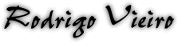

- Puesto en HIJOS
DEL SOL: Cadete administrativo.
- Edad: 22 años.
- Fecha de nacimiento:
22 de Mayo de 1977.
- Signo: Géminis.
- Diestro o Zurdo:
Manco.
- Pelicula favorita:
"E.T. el extraterrestre".
- Ultimo libro leido:
"El Principito".
- Canción que quiero
que toquen en mi funeral: "Porque es un buen compañero".
- Canción favorita
de HIJOS DEL SOL: "Nadie escucha".
- Canción favorita
tocada en vivo: "Inside Tomorrow".
- Bajo que usa que
usa: "Danelectro".
- Banda favorita:
"Las pelotas".
- Disco Favorito:
"Llegando los monos" (Sumo).
- Canción favorita:
Mother (Pink Floyd).
- Guitarrista favorito:
Santana / Marty Friedman y Dave Mustaine (Megadeth) / Jimmy Hendrix.
- Bajista favorito:
Arnedo (Divididos) / Gezzer Butler (Black Sabbath).
- Baterista favorito:
Danny Carey (Tool).
- Cantante favorito:
Bruce Dickinson (Iron Maiden / Solista).
- Compositor favorito:
Lennon/McCartney (The Beatles) - Sosa/Martinez (HIJOS DEL SOL).
- Ultimo disco que
me partio la cabeza: "Leyenda" de Bob Marley.
- Mejor show en vivo
que vio: Festibal alternativo.
- Bandas que detesta:
A.N.I.M.A.L. y la mayoria de MTV.
- Peor disco que compro:
Ninguno.
- Peor show en vivo
que vio: Heroes del silencio en Obras.

